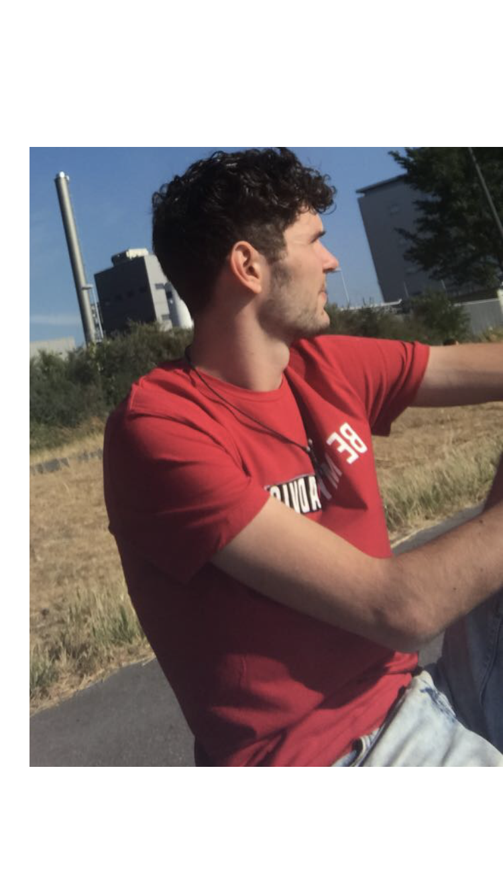

Das bin Ich:

Name:
Simon Geiger
Geboren:
15.11.1996
Geschwister:
1 Bruder
Ich mag:
Musik, Auflegen, Sport, Kochen
Mein Studium:
Studiengang:
OMB A
Semester:
2.
Warum dieser Studiengang:
Wollte was mit Medien machen, für die HDM hats nicht gereicht, aber ich bin zufrieden;)
Andere schöne Menschen:
Flexi
Mai
Luca